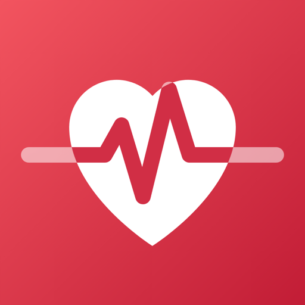

Parmak ucunla nabız
Arka kamerayı ve flaşı parmak ucunla 30 saniye kapat. Nabzını, dinlenme aralığında olup olmadığını, HRV'ni ve stresini gör.

PressnoteiPhone için nabız ve tansiyon
Parmağını 30 saniye kameraya koy; nabzını, HRV'ni ve stresini gör. Kamerayı aletine tut, ölçüm kaydedilsin. Yedi günün sonunda doktorunun bir dakikada okuyacağı bir PDF'in olur.
Çok yakındaApp Store'da, iPhone içinDoktorlar genelde bir hafta evde ölçüm ister: sabah kahvaltıdan ve ilaçtan önce iki, akşam iki. Pressnote sana hatırlatır, günleri sayar ve haftayı tek bir PDF'e çevirir.
| Gün | Sabah | Akşam | Nabız |
|---|---|---|---|
| Pzt | 132/85 | 124/79 | 66 |
| Sal | 128/83 | 121/77 | 70 |
| Çar | 135/86 | 126/80 | 68 |
| Per | 130/84 | 122/78 | 64 |
| Cum | 127/82 | 119/76 | 71 |
| Cmt | 133/85 | 125/79 | 67 |
| Paz | 129/83 | 123/78 | 69 |
Evreler bölgendeki kılavuza göre: Türkiye ve Avrupa'da ESH 2023, ABD'de ve çoğu ülkede AHA/ACC 2025, Japonya'da JSH 2019. Bu örnekte ESH kullanıldı.
Arka kamerayı ve flaşı parmak ucunla 30 saniye kapat. Nabzını, dinlenme aralığında olup olmadığını, HRV'ni ve stresini gör.
Kamerayı tansiyon aletinin ekranına tut. Pressnote büyük ve küçük tansiyonu ve nabzı okur, kaydetmeden önce sen onaylarsın.
Sabah ve akşam hatırlatmaları, senin yerine sayılan günler ve sabahla akşamı ayrı gösteren tek bir grafik.
Sabah ve akşam ortalamaları, grafik ve gün gün tablo, üstünde adınla. Posta ya da mesajla paylaş.
Her ölçüm hangi evrede olduğunu bir bakışta gösterir; yaşadığın yerdeki doktorların kullandığı kılavuza göre.
Aletinin uygulamasının Apple Sağlık'a kaydettiği ölçümleri al, kendi ölçümlerini de oraya kaydet.
Pro, 3 günü ücretsiz yıllık plan ya da haftalık plan olarak sunulur. Ödeme ekranı, denemenin bittiği tarihi başlamadan önce gösterir.
Flaş parmak ucunu aydınlatır, kamera her kalp atışında rengin nasıl hafifçe değiştiğini görür. Pressnote 30 saniye boyunca atımları ve aralarındaki süreyi sayar; nabzın, HRV'n ve stres seviyen buradan çıkar.
Ekranında büyük tansiyonu, küçük tansiyonu ve nabzı rakamla gösteren aletleri; evde kullanılanların çoğu böyledir. Pressnote'in ne okuduğunu görür, kaydetmeden önce onaylarsın. Ölçümü her zaman elle de yazabilirsin.
iPhone'unun bölgesindeki kılavuzu: Türkiye ve Avrupa'da ESH 2023, ABD'de ve çoğu ülkede AHA/ACC 2025, Japonya'da JSH 2019.
Denemenin bitmesine en az 24 saat kala iptal etmezsen, başlamadan önce gösterilen tarihte yıllık ücret alınır. İptal için iPhone Ayarları'nda adına, sonra Abonelikler'e dokun.
Ölçümlerin iPhone yedeğinin bir parçasıdır. Pro ile onları Apple Sağlık'ta da tutabilir ya da hepsini CSV dosyası olarak dışa aktarabilirsin.